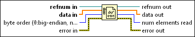

Preallocated Read from Binary File Function
Owning Palette: Advanced File VIs and Functions
Requires: Base Development System
Reads binary data from a file and places the data into an array that you have already allocated without incurring a copy of the data. Unlike the Read from Binary File function, this function avoids run-time memory allocations.
The performance of this function depends on the array you preallocate.
The connector pane displays the default data types for this polymorphic function.

 Add to the block diagram Add to the block diagram |
 Find on the palette Find on the palette |